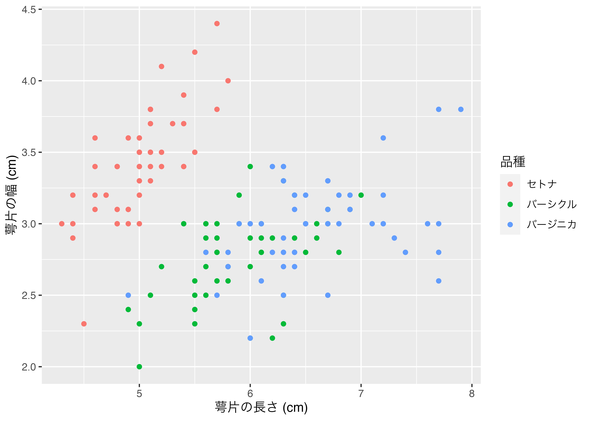
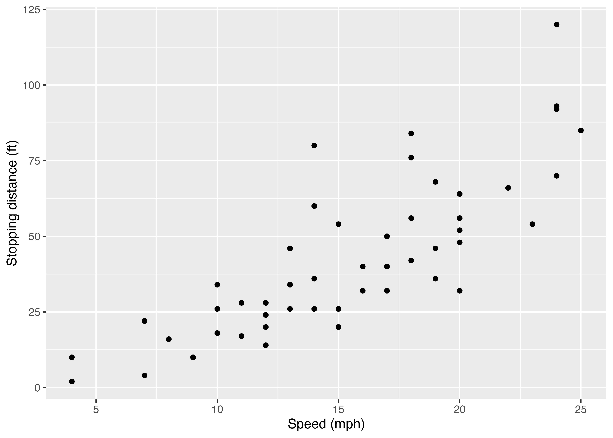
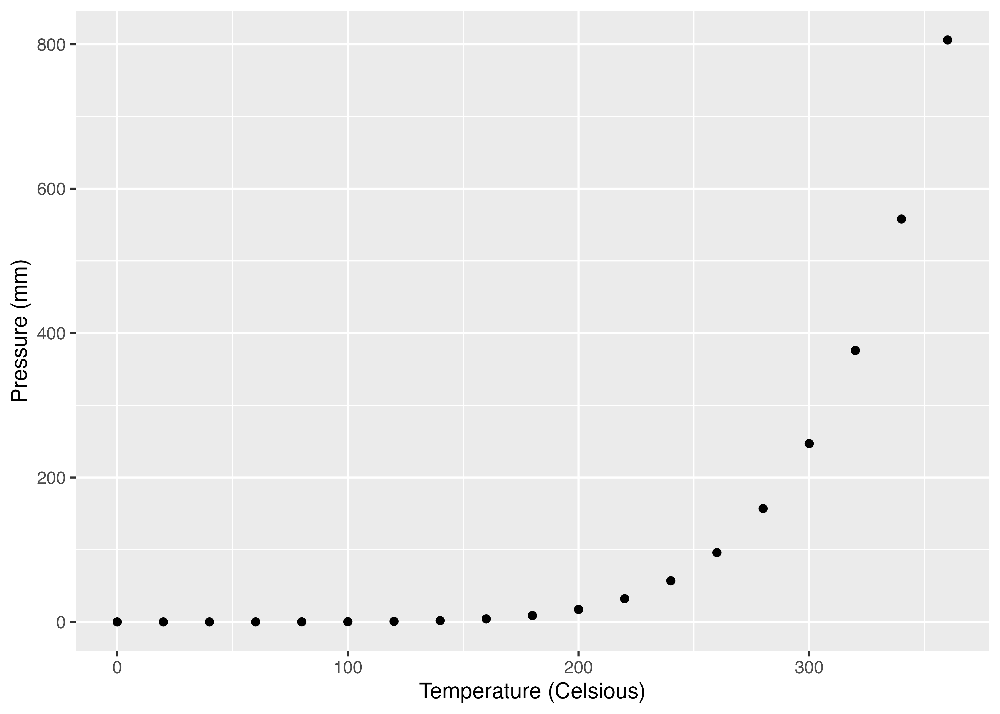

Quarto入門
はじめに
- 以下の内容は現在執筆中の内容の一部となります。
- 本記事を読まれる前に本ページの「R Markdown入門」、または『私たちのR』の「R Markdown [基礎]」を予め読んでください。
Quartoとは
QuartoはPandocベースのオープンソース科学/技術出版システムである。簡単にいうと、R MarkdownのようにRコードと結果、文章を一つの文書として（HTML/PDF/Microsoft Word等）まとめてくれるものだ。目的が同じである以上、R Markdownを問題なく使いこなしているのであれば、Quartoの学習はさほど難しくないし、そもそもQuartoに乗り換える必要もあまりない。ただし、筆者（宋）は今後、QuartoがR Markdownに代わる主流になると考えているため（そうでないと考えている方も大勢にいる）、本章ではQuartoを簡単に紹介したい。
むろん、別の名前が付いてある以上、Quarto = R Markdownではない。文法などの違いは本章の中盤以降に説明するとして、まず両者の技術的な面での違いを紹介する。
一点目は使用可能なエンジンだ。たとえば、R Markdownは.Rmdをknitrエンジンを経由し、コードとその結果物が含まれた.mdファイルを生成する。ここで生成された.mdファイルはPandocを経由して最終的にはHTML、PDF、Microsoft Wordファイルに変換される（ 図 1 (a) ）。Quartoも基本的に同じである。ただし、knitrエンジン以外にもPython、Juliaで多用されるJupyterやJavaScripベースのObservableもエンジンとして使用可能という特徴がある（ 図 1 (b) ）。使用可能なエンジンが多いということはRコード以外にもPyhton、Julia、Observable JSのコードも使えるといったメリットがある。また、使用可能なエンジンは今後のアップデートで追加される可能性もある。ちなみにQuartoにはMermaid、GraphVizが実装されており、以下のようなダイアグラム作成も別途の設定なしで簡単にできる。
flowchart LR
A[.Rmd] --> B[knitr]
B --> C[.md]
C --> D{Pandoc}
D --> E(HTML)
D --> F(PDF)
D --> G(Microsoft Word)
D --> H(Etc.)
flowchart LR
A[.qmd] --> B[knitr]
A --> C[Jupyter]
A --> D[Observable JS]
A --> E[Etc]
B --> F[.md]
C --> F
D --> F
E --> F
F --> G{Pandoc}
G --> H(HTML)
G --> I(PDF)
G --> J(Microsoft Word)
G --> K(Etc.)
二点目は様々なフォーマットが統合されている点だ。R Markdownだと文書を作成する場合は{rmarkdown}パッケージ、ホームページを作成するなら{blogdown}パッケージ、スライドを作成するなら{xaringan}等のパッケージを使うことになる。しかし、Quartoはプラスアルファのパッケージを使わず、Quarto単体で様々なフォーマットが作成できる。ここまで聞くとR Markdownの方がより拡張性に優れているように見えるが、QuartoもまたQuarto Extensionを通じて様々な拡張機能が導入できる1。また、Lua言語の知識があれば、自分で拡張機能を作成することができる。
三点目はIDEだ。R Markdownの場合、ほぼRStudio一度（他のIDEでももちろん出来る）であったが、QuartoだとVisual Studio CodeやJupyter、NeoVim、Emacs、SublimeTextも使用可能であり、RStudioとほぼ変わらない使用経験を提供する（ 図 2 ）。


しかし、QuartoはR Markdownの上位互換でもなく、R Markdownを代替するものでもないことには注意されたい（参考）。つまり、既存のR Markdownを問題なく使っているのであれば、Quartoへの移行は不要だろう。現在のところ、QuartoはR Markdown生態系を一つに統合したものに近く、文法などもほぼ同じであるため、移行のために新しい事をゼロベースから勉強する必要はほぼない。
セットアップ
Quartoを使う前に以下の3つの項目を確認する必要がある。1つ目はQuarto CLIのインストールだ。Quarto CLIは公式ホームページからダウンロードできる（https://quarto.org/docs/get-started/）。macOS、Linux、Windows版が提供されているため、自分のOSに合わせてダウンロードし、インストールしておこう。2つ目はRStudioを最新バージョンにアップデートすることだ。RStudioで本格的にQuartoが使えるようになったのはRStudio 2022.07からである。基本的に現時点での最新版をインストールしておけば問題ないだろう。2つ目はRパッケージ{quarto}のインストールだ。こちらはインストールするだけで十分で、別途読み込む必要がない。
簡単な使い方
Quartoは基本的にR Markdownと同じ感覚で使える。たとえば、R Markdownで新しい文書を作成する際はRStudioのFile > New File > R Markdown…を選択するが、QuartoはFile > New File > Quarto Document…を選択する2くらいの違いだ。ただし、作成したファイルを文書に変換するときにはR Markdownだと「Knit」ボタンをクリックしたが、QuartoはKnit以外にもJupyterやObservableなども使用可能であるため、代わりに「Render」ボタンをクリック3しよう。
以下ではR MarkdownとQuartoの書き方の違いについて解説する。すべてを列挙することはできないため、よく使う機能の相違点のみを紹介する。より詳しく知りたい場合はQuartoの公式ホームページを参照すること。
チャンクオプションの付け方
現時点においてR Markdownと同じ書き方でも問題ない。つまり、```{r}のrの後ろにチャンクのラベル、オプションを付けても問題なく作動する。
```{r fig-scatter1, fig.height = 5, fig.width = 7, fig.cap = "図の例", cache = TRUE}
iris %>%
mutate(Species2 = recode(Species,
"setosa" = "セトナ",
"versicolor" = "バーシクル",
"virginica" = "バージニカ")) %>%
ggplot() +
geom_point(aes(x = Sepal.Length, y = Sepal.Width, color = Species2)) +
labs(x = "萼片の長さ (cm)", y = "萼片の幅 (cm)", color = "品種")
``` しかし、Quarto特有の書き方として、チャンクオプションを{r}内に書かず、チャンク内に#|で書く方法がある。#|とオプションの間には半角スペースを入れる必要がある。チャンクオプションが多くなると、コードが非常に長くなることもあるので、こちらの書き方が読みやすいだろう（しかも、{r}内のオプションは改行もできない）。ちなみに、チャンクのラベルのオプションはlabel:で指定する必要がある。
```{r}
#| label: fig-scatter1
#| fig-cap: "図の例"
#| fig-height: 5
#| fig-width: 7
#| fig-align: "center"
#| cache: true
iris %>%
mutate(Species2 = recode(Species,
"setosa" = "セトナ",
"versicolor" = "バーシクル",
"virginica" = "バージニカ")) %>%
ggplot() +
geom_point(aes(x = Sepal.Length, y = Sepal.Width, color = Species2)) +
labs(x = "萼片の長さ (cm)", y = "萼片の幅 (cm)", color = "品種")
``` これらのチャンクオプションはR Markdownとほぼ同じであるものの、一部名称が異なるオプションがある。たとえば、図の幅を指定するR Markdownのfig.widthは、Quartoだとfig-widthを使う。また、実引数としてTRUEとFALSEは、通常のYAMLと同様、trueとfalseを使用する。これはYAMLヘッダーでも同じだ。他にも仮引数 = 実引数でなく、仮引数: 実引数で書くことにも注意しよう。
相互参照について
図表の相互参照も方法もやや異なる。たとえば、チャンクのラベルがfig-scatter1という図がある場合、R Markdownでは図 \@ref(fig-scatter1)、またはFigure \@ref(fig-scatter1)と書く必要があった。しかし、Quartoだと@fig-scatter1だけで十分である。以下の例を見てみよう。
Input:
以下の @fig-scatter1 は萼片の長さと幅を品種ごとに分けて示した散布図である。
```{r}
#| label: fig-scatter1
#| echo: false
#| fig-cap: "萼片の長さと幅の関係（品種別）"
iris %>%
mutate(Species2 = recode(Species,
"setosa" = "セトナ",
"versicolor" = "バーシクル",
"virginica" = "バージニカ")) %>%
ggplot() +
geom_point(aes(x = Sepal.Length, y = Sepal.Width, color = Species2)) +
labs(x = "萼片の長さ (cm)", y = "萼片の幅 (cm)", color = "品種")
```Output:
以下の 図 3 は萼片の長さと幅を品種ごとに分けて示した散布図である。
図だけでなく、表や章でも同じやり方で相互参照ができる。ただし、一点注意が必要である。相互参照に使うチャンクのラベルに制約があることだ。R Markdownではチャンクラベルの制限がなかったものの、Quartoの場合ラベルはsec-（章・節など）、fig-（図）、tbl-（表）で始まる必要がある。図表はチャンクラベルで指定できるが、章や節などの見出しの場合、以下のようにラベルを指定する。この書き方はチャンク以外の図表にラベルを付ける時も同様だ（後述）。
## Rの素晴らしさについて {#sec-aboutR} また、Quartoの既定値のままだと「Figure X」と出力される。これを「図 X」の形式にしたい場合はYAMLヘッダーにlang: jaを追加するか、language:で別途指定する必要がある4。
コールアウト
Quartoでは5種類のコールアウト（callout）が提供される。以下はコールアウト作成のコードとその結果である。:::{.callout-*}と:::間の内容が一つのブロック（コールアウト）となり、##でブロックのタイトルを指定する。また、{}内の*の箇所にはブロックの見た目を指定し、現在、note、warning、important、tip、cautionの5種類がある。
Input:
:::{.callout-note}
## Rはみんなの友達!
末永くよろしくね!
:::Output:
Rはみんなの友達!
末永くよろしくね!
Input:
:::{.callout-warning}
## Rはみんなの友達!
末永くよろしくね!
:::Output:
Rはみんなの友達!
末永くよろしくね!
Input:
:::{.callout-important}
## Rはみんなの友達!
末永くよろしくね!
:::Output:
Rはみんなの友達!
末永くよろしくね!
Input:
:::{.callout-tip}
## Rはみんなの友達!
末永くよろしくね!
:::Output:
Rはみんなの友達!
末永くよろしくね!
Input:
:::{.callout-caution}
## Rはみんなの友達!
末永くよろしくね!
:::Output:
Rはみんなの友達!
末永くよろしくね!
.callout-*の後にcollapse="true"を付けるとコールアウトの本文を隠すことができる（見出しをクリックすると本文が表示される）。
Input:
:::{.callout-note collapse="true"}
## Rはみんなの友達!（クリック）
末永くよろしくね!
:::Output:
Rはみんなの友達!（クリック）
末永くよろしくね!
また、.callout-*の後にicon="false"を付けると見出しの左にあるアイコンを消すことができる。
Input:
:::{.callout-warning icon="false"}
## Rはみんなの友達!
末永くよろしくね!
:::Output:
段組み
Quartoの段組みは非常に簡単だ。::::{.columns}と::::で囲まれた領域内の内容が段組みの対象となり、:::{.column}と:::で囲まれた領域が一つ一つの段となる。また、.columnの次にwidth引数を追加することで、段の幅を指定することもできる。以下はコードのその結果を2段構成で示した例だ。
Input:
::::{.columns}
:::{.column width=56%}
**コード:**
```{r}
#| eval: false
x <- c(1, 2, 3, 1, 2)
y <- c("A", "A", "A", "B", "B")
paste0(x, y)
```
:::
:::{.column width=2%}
:::
:::{.column width=42%}
**結果:**
```{r}
#| echo: false
x <- c(1, 2, 3, 1, 2)
y <- c("A", "A", "A", "B", "B")
paste0(x, y)
```
:::
::::Output:
パネル
パネルは段組みのように複数の内容を同じ行に出力する機能であるが、段組みは左右に並べる一方、パネルが異なるページへ出力する。たとえば、データセットの作成と、そのデータを使った作図のコードを示す場合、2つのチャンクを横に並べるには幅が狭いかも知れない。この場合、使えるのがパネル機能だ。使い方は段組みより簡単で、:::{.panel-tabset}と:::間に入力された内容がパネル内容になる。各パネルのタイトルは##見出しで指定でき、これが各パネルの区切りにもなる。
Input:
:::{.panel-tabset}
## データ
```{r}
library(tidyverse)
my_data <- tibble(City = c("東京", "北京", "ソウル"),
Pop = c(1396, 2154, 978))
my_data
```
## プロット
```{r}
#| fig-width: 8
#| fig-height: 4
my_data %>%
mutate(City = fct_inorder(City)) %>%
ggplot(aes(x = City, y = Pop)) +
geom_col() + # geom_bar(stat = "identity") もOK
labs(x = "都市", y = "人口（万人）") +
theme_bw(base_size = 14)
```
:::Output:
図表について
R Markdown/Quarto関係なく多くの図は{ggplot2}、{lattice}、Base Rなどで作成され、表は{knitr} + {kableExtra}、{gt}などで作成される。しかし、通常のMarkdown文法で表を作ったり、図を挿入したりするケースも多いだろう。QuartoはMarkdown文法の作成/挿入された図表のカスタマイズもより柔軟だ。
たとえば、図の大きさはの後ろに{}を付け、widthやheight引数を指定することで修正できる。たとえば、図の幅を100ピクセルにする場合はwidth=100pxで良い。サイズの指定方法はピクセル（px; 省略可）以外にも画面の幅に対する割合（例：50%）、インチ（例：4in）もできる。
Input:
Output:

Input:
{width=100px}Output:
他にも、で挿入される図の場合、R Markdownでは大きさの調整や中央揃えが面倒だ。しかし、Quartoの場合、後ろに{}を入れることでいくつかの修正ができる。
Input:
{fig-align="left"}Output:
Input:
{fig-align="center"}Output:
Input:
{fig-align="right"}Output:
他にも複数のグラフを並べることもR Markdownに比べ、簡単にできる。横に並べるなら段組みでもよいが、:::{layout-ncol}がより楽だ。ncolの代わりにnrowも指定できる。以下のコードは図を3列配置する例だ（モバイルデバイスの場合、縦に並ぶように表示される）。
Input:
:::{layout-ncol=3}


:::Output:
図の相互参照とためのラベルはの後ろの{}内に#fig-で指定できる。並べた図にラベルを付けることもできる。
Input:
* 複数の図の相互参照: @fig-three-cats
* 個別の図の相互参照: @fig-cat1
:::{#fig-three-cats layout-ncol=3}
{#fig-cat1}
{#fig-cat2}
{#fig-cat3}
3匹の猫
:::Output:
:::{layout-ncol}を使えば、複数の表を並べることもできる。相互参照についても同じだが、ラベル名は#fig-の代わりに#tbl-を使う必要がある。
Input:
@tbl-two-tables は、東アジアとヨーロッパ主要都市の人口、面積、人口密度の一覧である。ただし、 @tbl-east-asia の東京は23区でなく、東京都全域であることに注意されたい。
::: {#tbl-two-tables layout-ncol=2}
| Name | Pop. | Area | Density |
|:--------|------:|-------:|--------:|
| Tokyo | 1,403 | 2,194 | 6,397 |
| Beijing | 2,170 | 16,410 | 1,323 |
| Seoul | 949 | 605 | 15,688 |
: East Asia {#tbl-east-asia}
| Name | Pop. | Area | Density |
|:-------|------:|------:|--------:|
| London | 943 | 1,569 | 5,354 |
| Berlin | 367 | 892 | 4,114 |
| Paris | 215 | 105 | 20,382 |
: Europe {#tbl-europe}
首都の人口（万人）、面積（km<sup>2</sup>）、人口密度（人/km<sup>2</sup>）
:::Output:
表 1 は、東アジアとヨーロッパ主要都市の人口、面積、人口密度の一覧である。ただし、 表 1 (a) の東京は23区でなく、東京都全域であることに注意されたい。
表 1: 首都の人口（万人）、面積（km2）、人口密度（人/km2）
| Name | Pop. | Area | Density |
|---|---|---|---|
| Tokyo | 1,403 | 2,194 | 6,397 |
| Beijing | 2,170 | 16,410 | 1,323 |
| Seoul | 949 | 605 | 15,688 |
| Name | Pop. | Area | Density |
|---|---|---|---|
| London | 943 | 1,569 | 5,354 |
| Berlin | 367 | 892 | 4,114 |
| Paris | 215 | 105 | 20,382 |
また、この機能はチャンクで生成された図についても使用可能だ。チャンクオプションに#| layout-ncol: 2を追加すると、2つの図が横に並ぶことになる。ただし、相互参照の際、個別の図のラベルはこちら側では指定できず、自動生成される。たとえば、プロット群のラベルがfig-two-plotsなら1つ目の図のラベルはfig-two-plots-1、2つ目はfig-two-plots-2となる。
Input:
@fig-two-plots は2つの散布図であり、 @fig-two-plots-1 は速度と停止距離との関係、 @fig-two-plots-2 は気温と気圧の関係を示す。
```{r}
#| label: fig-two-plots
#| echo: false
#| layout-ncol: 2
#| fig-cap: "散布図の例"
#| fig-subcap:
#| - "速度と停止距離"
#| - "気温と気圧"
cars %>%
ggplot(aes(x = speed, y = dist)) +
geom_point() +
labs(x = "Speed (mph)", y = "Stopping distance (ft)")
pressure %>%
ggplot(aes(x = temperature, y = pressure)) +
geom_point() +
labs(x = "Temperature (Celsious)", y = "Pressure (mm)")
```Output:
図 5 は2つの散布図であり、 図 5 (a) は速度と停止距離との関係、 図 5 (b) は気温と気圧の関係を示す。


ハイパーリンクのターゲット
Markdownのハイパーリンクは以下のように書く。
[ここ](https://www.jaysong.net)をクリックすると宋のホームページへ移動します。「ここ」の文字をクリックすると宋のホームページへ飛ばされるコードである、R Markdownも、Quartoもデフォルトではそのウィンドウ/タブを使うことになる5。これを新しいウィンドウ/タブで開かせるためにはやむを得ずHTMLタグを使う必要がある。
<a href="https://www.jaysong.net" target="_blank">ここ</a>をクリックすると宋のホームページへ移動します。 しかし、Quartoだと通常のMarkdown記法を使うことができる。[]()の後ろに{target="_blank"}を付けるだけだ。実は書く手間としては若干軽減された程度であるが、地味に嬉しい機能だ。
[ここ](https://www.jaysong.net){target="_blank"}をクリックすると宋のホームページへ移動します。YAMLヘッダー
YAMLヘッダーの場合、R Markdownの書き方と大きく変わらないものの、論理値（TRUEとFALSE）の書き方が異なる点には注意されたい。R MarkdownはRに因んでTRUEとFALSEを使うが、QuartoはYAML本来の書き方であるtrueとfalseを使用する。
また、Quarto独自のオプションも多数用意されているので、詳細はQuarto公式ページを確認してみよう。
Quartoを知り尽くす
Quartoは発展途中であり、以上の内容は1ヶ月後は古い資料になっているのかも知れない。本記事もなるべく最新情報をフォローしていく予定だが、Quartoの詳細を含め、最新情報は以下のページを参照されたい。
- Quarto公式HP：https://quarto.org/docs/guide/
- rstudio::conf 2022 Workshopの資料：https://rstudio-conf-2022.github.io/get-started-quarto/